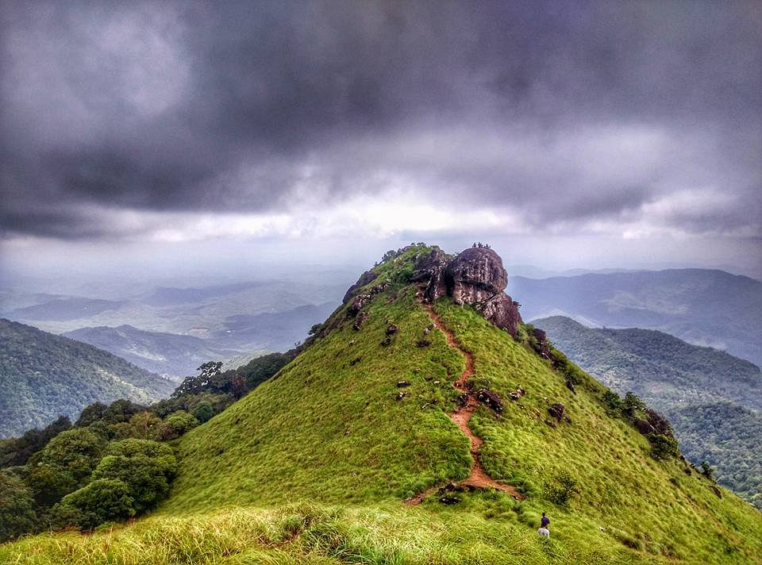
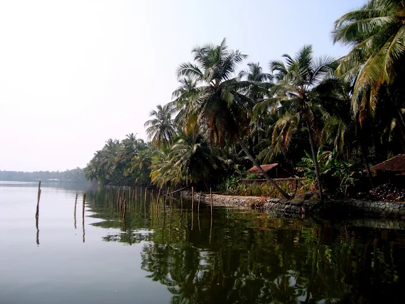

Top Tourist Places in Kasaragod
From hill trails and quiet backwaters to historic coastal landmarks, Kasaragod offers experiences for every kind of traveller.
1. Ranipuram Hills

Ranipuram is a scenic trekking destination, known for its grasslands, evergreen shola forests, misty views, and trails rising to about 780 metres above sea level.
Read about Ranipuram Hills on Wikipedia2. Valiyaparamba Backwaters

Fed by four rivers and dotted with peaceful islands, Valiyaparamba is ideal for a slow houseboat cruise through North Kerala’s backwater landscape.
Read about Valiyaparamba on Wikipedia